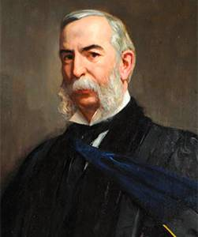

About us
“What are we aiming at?”
That’s the question our university’s first president, Daniel Coit Gilman, asked at his inauguration in 1876. What is this place all about, exactly? His answer:
"The encouragement of research . . . and the advancement of individual scholars, who by their excellence will advance the sciences they pursue, and the society where they dwell."
Gilman believed that teaching and research go hand in hand—that success in one depends on success in the other—and that a modern university must do both well. He also believed that sharing our knowledge and discoveries would help make the world a better place.In 140 years, we haven’t strayed from that vision. This is still a destination for excellent, ambitious scholars and a world leader in teaching and research. Distinguished professors mentor students in the arts and music, humanities, social and natural sciences, engineering, international studies, education, business, and the health professions. Those same faculty members, along with their colleagues at the university’s Applied Physics Laboratory, have made us the nation’s leader in federal research and development funding every year since 1979.That’s a fitting distinction for America’s first research university, a place that has revolutionized higher education in the U.S. and continues to bring knowledge and discoveries to the world.